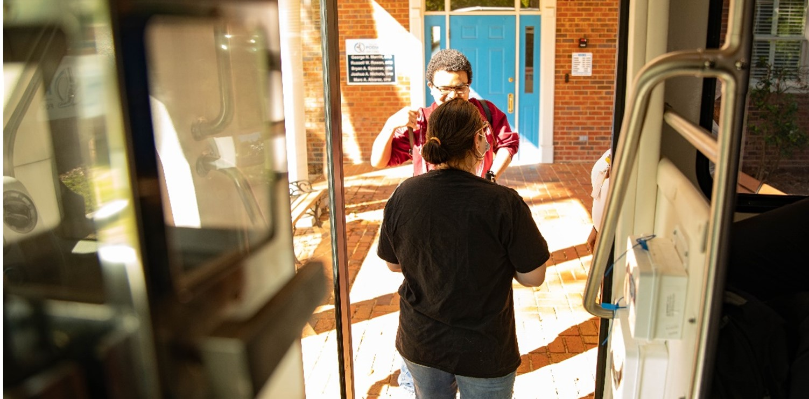

Why Tallahassee’s Current Transit Is Falling Behind
Tallahassee’s current transportation model relies heavily on cars and private means of transportation, leading to the underdevelopment of public transportation. This leaves many citizens in transportation deserts, where they lack accessible means to travel. Currently, Tallahassee’s public transportation model is suffering from issues, including long waiting times, lack of stop locations, and tardiness. The model the city is currently using is the spoke-and-wheel model, which has a central downtown area with “spokes”, or roads spreading from there to across the city. Instead, the project calls for transitioning to a bus and bike model, with decentralized transit hubs compared to the current spoke-and-wheel model. By doing so, the project aims to solve the highlighted current issues, providing a more accessible form of transportation for all Tallahassee residents.


The direct audience for this proposal is local politicians and municipal stakeholders, which include the Tallahassee City Commission and StarMetro transit planners. This is because local politicians hold the ultimate decision-making power and budgetary control to approve the necessary changes, including municipal funds and federal transportation grants. Residents outside of the downtown core, in sprawling suburban sectors, often face severe isolation from essential services and educational institutions due to low vehicle frequency and underdeveloped coverage. Historically, municipal efforts have relied on Central Business District-focused models that force most commuters through a single downtown bottleneck.
Data & Proposed Solutions
To build a more effective network for Tallahassee, current structural models must be evaluated alongside accessibility metrics. Bhattacharya et al. (2013) discussed how a decentralized public transportation model, a model that is not based on the traditional downtown area (Central Business District) with a spoke-and-wheel design, but has hubs equally distributed around the city, improves destination travel times and location accessibility without increasing inequality or discrimination. Focusing on the public transportation systems in Tallahassee, Florida, the authors claim decentralizing transportation hubs reduces overall travel times. Applying these findings to Tallahassee residents, transitioning to a more decentralized network brings down travel time and increases connectedness for essential services, job centers, and educational institutions.

However, to ensure the efficacy of these decentralized hubs, this model must be paired with quantifiable metrics. Bilek et al. (2026) introduce the Public Transport Accessibility Index for Residents (PTAIR). Applied to a new residential district in Algiers, this measurement quantifies population distribution as well as transport capacity into one index. The authors highlight how suburban residents are isolated from the main transportation networks because of low population density and low service capacity. Applying this finding to Tallahassee’s public transportation growth, it can be suggested that increasing capacity and vehicle frequency help to prevent transit deserts, increasing connectivity in growing neighborhoods. For municipal stakeholders, decentralizing StarMetro’s hubs is half the solution. Planners must use standardized indices like PTAIR to increase vehicle frequency in suburban sectors, preventing the formation of transit deserts and ensuring equitable access.
To make this transition manageable, the city could begin with a limited pilot linking neighborhood hubs to frequent bus service and safe bicycle connections. Before launch, planners should record baseline travel times, service frequency, ridership, and access to essential destinations. During the pilot, these measures can be reviewed alongside rider feedback, with particular attention to older adults, people with disabilities, students, and residents without cars. Publicly reporting results would help the City Commission compare benefits and costs, adjust routes where service gaps remain, and decide whether to expand the model.


Furthermore, Schiffer (1996) examines Tallahassee’s public transportation development through the Intermodal Surface Transportation Efficiency Act (ISTEA) framework in the Tallahassee 2020 Plan Update. Schiffer demonstrates that multimodal transportation yields superior results than road transportation alone, increasing destination accessibility while dropping net trip time by 8 minutes. Building on this, Kosmidis and Müller-Eie (2024) find that integrating bus stops with bicycles increases the range of the “last mile,” enabling residents to travel further without a car.
Protecting Vulnerable Populations and Ensuring Equity
Additionally, it is important to examine not only who is included in public transportation, but also who is excluded to build a successful expansion of the existing public transport system. Dilian et al. (2025) explore the consequences of urban transport cessation among older adults. The research group found that losing the ability to access public transit triggers a compound decline in cognitive ability, leading to a loss in independence. Combining the results of this study with the broad goals that have been established by Bhattacharya et al. (2013) and Bilek et al. (2026) for the StarMetro system, Dilian et al. (2025)’s findings underscore how public transportation access is vital for elder citizens, safeguarding mobility and long-term quality of life in Tallahassee. It is essential that public officials provide public transportation to improve the quality of life of citizens in the locality.

Public transportation ensures equitable access to everyone in society, including elderly populations, university students, and low-income residents. This impacts real people, not just convenience for a few. Inefficient public transit harms these vulnerable populations by reducing their access to wider society, affecting their well-being and opportunities for societal advancement. Besides that, adequate public transportation helps to enhance economic productivity by reducing inefficiencies induced by traffic congestion. By reducing demands for private automobile transportation, the city can also save up funds for road maintenance. The funds from road maintenance could therefore be reallocated to alleviate the financial costs of expanding the StarMetro system with less tax burden to residents.
Fiscally Responsible Investment & Funding Solutions
While the logistical and social benefits of expanding the StarMetro system are clear, any viable proposal needs to directly address the funding constraints inherent to a municipal transit project. Expanding bus routes, upgrading route frequency, as well as brand-new bicycle infrastructure require immense upfront investment. These costs, however, can be addressed by federal grants, public-private partnerships, pilot programs, along with phased implementation as outlined by Schiffer (1996) in his historical transit proposal.
To manage financial risk, the city can release funding in stages rather than committing to a full network redesign at once. Each stage can have clear milestones, such as launching service at selected hubs, tracking ridership and on-time performance, and publishing operating costs. Comparing actual results with those goals would give decision-makers a basis for adjusting service before expanding it. This approach makes trade-offs visible to residents and helps ensure future investment follows demonstrated community needs.


Furthermore, by shifting commuters away from costly automobile infrastructure to high-efficiency public infrastructure (Bhattacharya et al., 2013), maintenance cost reductions from automobile infrastructure can be offset, while ensuring equitable transportation access to all individuals, particularly vulnerable groups (Dilian et al., 2025). Local officials can divest funds from multiple sources, which mitigates the financial impact of StarMetro’s investment.
Call to Action
The Time to Modernize StarMetro Is Now
Modernizing StarMetro would directly benefit Tallahassee residents. Our proposal uses quantitative evidence, including the Public Transport Accessibility Index for Residents (PTAIR), to show how decentralizing transit hubs can decrease destination travel times and help eliminate suburban transit deserts. Financially, shifting just 15% of daily car trips to public transit could reduce associated costs, including pavement degradation, yielding millions of dollars in cumulative road maintenance savings over ten years that could directly offset StarMetro expansion costs. Beyond the numbers, this overhaul addresses the travel needs of many underserved residents, including university students and working-class families in areas like Frenchtown and Southside. For senior citizens, transit loss can accelerate cognitive decline and reduce independence. The peer-reviewed research on decentralized transit and last-mile bicycle integration provides this proposal with a grounded, evidence-based perspective. This proposal provides the Tallahassee City Commission and StarMetro planners with a proven roadmap to approve a pilot decentralization program, adopt PTAIR standards, and fund last-mile infrastructure for a more well-connected city.


About Us
Connecting Tallahassee is an advocacy project focused on a more accessible, reliable, and connected public transportation system for Tallahassee. It brings together local transit context and published research to make the case for strengthening StarMetro through decentralized hubs, dependable service, and safe connections for walking and bicycling.
Our goal is to support informed discussion among residents, transit planners, and local decision-makers. The proposal emphasizes practical steps, attention to riders who face the greatest barriers, and transparent evaluation of costs and outcomes. It is an invitation to consider how thoughtful investment in public transportation can help connect more people to jobs, education, services, and one another.
References
- Bhattacharya, Torsha, et al. “Restructuring from a Central Business District–Focused to a Decentralized Transit System: Case Study of StarMetro in Tallahassee, Florida, to Determine Restructuring Effects on Riders and Accessibility to Destinations.” Transportation Research Record: Journal of the Transportation Research Board, vol. 2350, no. 1, Jan. 2013, pp. 17–25, https://doi.org/10.3141/2350-03.
- Bilek, Malika, et al. “Public Transport Service Accessibility Index: A New Approach Incorporating Residents’ Location and Transport Capacity: A Case Study in NCSA (Algiers).” Public Transport, vol. 18, no. 2, Mar. 2026, pp. 561–85, https://doi.org/10.1007/s12469-025-00420-y.
- Dilian, Omer, et al. “‘I Love Public Transport, but Now I’m Too Afraid to Use It’: A Qualitative Study of Public Transport Use Cessation Among Older Adults.” The Gerontologist, vol. 65, no. 8, Aug. 2025, https://doi.org/10.1093/geront/gnaf153.
- Fang, Qiaoling, et al. "Transit-Oriented Development and Sustainable Cities: A Visual Analysis of the Literature Based on CiteSpace and VOSviewer." Sustainability, vol. 15, no. 10, 2023, art. 8223, https://doi.org/10.3390/su15108223.
- Kosmidis, Ioannis, and Daniela Müller-Eie. “The Synergy of Bicycles and Public Transport: A Systematic Literature Review.” Transport Reviews, vol. 44, no. 1, June 2024, pp. 34–68, https://doi.org/10.1080/01441647.2023.2222911.
- Schiffer, Robert G. “Developing Long-Range Transportation Plans for Small Urbanized Areas in the ISTEA Era: Tallahassee 2020 Plan Update.” Transportation Research Record: Journal of the Transportation Research Board, vol. 1518, no. 1, Jan. 1996, pp. 13–18, https://doi.org/10.1177/0361198196151800103.